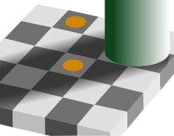
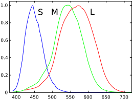

Colors
From Wikipedia, the free encyclopedia
(Redirected from Colors)
"Colorful" redirects here. For other uses, see Color (disambiguation) and Colorful (disambiguation).
Colored pencils Color (or colour in Commonwealth English; see spelling differences) is the visual perception based on the electromagnetic spectrum. Though color is not an inherent property of matter, color perception is related to an object's light absorption, reflection, emission spectra, and interference. For most humans, colors are perceived in the visible light spectrum with three types of cone cells (trichromacy). Other animals may have a different number of cone cell types or have eyes sensitive to different wavelengths, such as bees that can distinguish ultraviolet, and thus have a different color sensitivity range. Animal perception of color originates from different light wavelength or spectral sensitivity in cone cell types, which is then processed by the brain.Colors have perceived properties such as hue, colorfulness (saturation) , and luminance. Colors can also be additively mixed (commonly used for actual light) or subtractively mixed (commonly used for materials). If the colors are mixed in the right proportions, because of metamerism, they may look the same as a single-wavelength light. For convenience, colors can be organized in a color space, which when being abstracted as a mathematical color model can assign each region of color with a corresponding set of numbers. As such, color spaces are an essential tool for color reproduction in print, photography, computer monitors, and television. Some of the most well-known color models and color spaces are RGB, CMYK, HSL/HSV, CIE Lab, and YCbCr/YUV.!
Because the perception of color is an important aspect of human life, different colors have been associated with emotions, activity, and nationality. Names of color regions in different cultures can have different, sometimes overlapping areas. In visual arts, color theory is used to govern the use of colors in an aesthetically pleasing and harmonious way. The theory of color includes the color complements; color balance; and classification of primary colors (traditionally red, yellow, blue), secondary colors (traditionally orange, green, purple), and t ertiary colors. The study of colors in general is called color science.
Physical properties
Colors have perceived properties such as hue, colorfulness (saturation) , and luminance. Colors can also be additively mixed (commonly used for actual light) or subtractively mixed (commonly used for materials). If the colors are mixed in the right proportions, because of metamerism, they may look the same as a single-wavelength light. For convenience, colors can be organized in a color space, which when being abstracted as a mathematical color model can assign each region of color with a corresponding set of numbers. As such, color spaces are an essential tool for color reproduction in print, photography, computer monitors, and television. Some of the most well-known color models and color spaces are RGB, CMYK, HSL/HSV, CIE Lab, and YCbCr/YUV.!
Electromagnetic radiation is characterized by its wavelength (or frequency) and its intensity. When the wavelength is within the visible spectrum (the range of wavelengths humans can perceive, approximately from 390 nm to 700 nm), it is known as "visible light"
Most light sources emit light at many different wavelengths; a source's spectrum is a distribution giving its intensity at each wavelength. Although the spectrum of light arriving at the eye from a given direction determines the color sensation in that direction, there are many more possible spectral combinations than color sensations. In fact, one may formally define a color as a class of spectra that give rise to the same color sensation, although such classes would vary widely among different species, and to a lesser extent among individuals within the same species. In each such class, the members are called metamers of the color in question. This effect can be visualized by comparing the light sources' spectral power distributions and the resulting colors.
Spectral colors
The familiar colors of the rainbow in the spectrum—named using the Latin word for appearance or apparition by Isaac Newton in 1671—include all those colors that can be produced by visible light of a single wavelength only, the pure spectral or monochromatic colors. The spectrum above shows approximate wavelengths (in nm) for spectral colors in the visible range. Spectral colors have 100% purity, and are fully saturated. A complex mixture of spectral colors can be used to describe any color, which is the definition of a light power spectrum.
The spectral colors form a continuous spectrum, and how it is divided into distinct colors linguistically is a matter of culture and historical contingency.[2] Despite the ubiquitous ROYGBIV mnemonic used to remember the spectral colors in English, the inclusion or exclusion o colors is contentious, with disagreement often focused on indigo and cyan.[3] Even if the subset of color terms is agreed, their wavelength ranges and borders between them may not be.
The intensity of a spectral color, relative to the context in which it is viewed, may alter its perception considerably. For example, a low-intensity orange-yellow is brown, and a low-intensity yellow-green is olive green. Additionally, hue shifts towards yellow or blue happen if the intensity of a spectral light is increased; this is called Bezold–Brücke shift. In color models capable of representing spectral colors,[4] such as CIELUV, a spectral color has the maximal saturation. In Helmholtz coordinates, this is described as 100% purity.
Color of objects
The physical color of an object depends on how it absorbs and scatters light. Most objects scatter light to some degree and do not reflect or transmit light specularly like glasses or mirrors. A transparent object allows almost all light to transmit or pass through, thus transparent objects are perceived as colorless. Conversely, an opaque object does not allow light to transmit through and instead absorbs or reflects the light it receives. Like transparent objects, translucent objects allow light to transmit through, but translucent objects are seen colored because they scatter or absorb certain wavelengths of light via internal scattering. The absorbed light is often dissipated as heat.[5]
Color vision
Development of theories of color vision
Although Aristotle and other ancient scientists had already written on the nature of light and color vision, it was not until Newton that light was identified as the source of the color sensation. In 1810, Goethe published his comprehensive Theory of Colors in which he provided a rational description of color experience, which 'tells us how it originates, not what it is'. (Schopenhauer)
n 1801 Thomas Young proposed his trichromatic theory, based on the observation that any color could be matched with a combination of three lights. This theory was later refined by James Clerk Maxwell and Hermann von Helmholtz. As Helmholtz puts it, "the principles of Newton's law of mixture were experimentally confirmed by Maxwell in 1856. Young's theory of color sensations, like so much else that this marvelous investigator achieved in advance of his time, remained unnoticed until Maxwell directed attention to it."[6]
At the same time as Helmholtz, Ewald Hering developed the opponent process theory of color, noting that color blindness and afterimages typically come in opponent pairs (red-green, blue-orange, ellow-violet, and black-white). Ultimately these two theories were synthesized in 1957 by Hurvich and Jameson, who showed that retinal processing corresponds to the trichromatic theory, while processing at the level of the lateral geniculate nucleus corresponds to the opponent theory.[7]
Color in the eye
The ability of the human eye to distinguish colors is based upon the varying sensitivity of different cells in the retina to light of different wavelengths. Humans are trichromatic—the retina contains three types of color receptor cells, or cones. One type, relatively distinct from the other two, is most responsive to light that is perceived as blue or blue-violet, with wavelengths around 450 nm; cones of this type are sometimes called short-wavelength cones or S cones (or misleadingly, blue cones). The other two types are closely related genetically and chemically: middle-wavelength cones, M cones, or green cones are most sensitive to light perceived as green, with wavelengths around 540 nm, while the long-wavelength cones, L cones, or red cones, are most sensitive to light that is perceived as greenish yellow, with wavelengths around 570 nm.
Light, no matter how complex its composition of wavelengths, is reduced to three color components by the eye. Each cone type adheres to the principle of univariance, which is that each cone's output is determined by the amount of light that falls on it over all wavelengths. For each location in the visual field, the three types of cones yield three signals based on the extent to which each is stimulated. These amounts of stimulation are sometimes called tristimulus values.[8]
